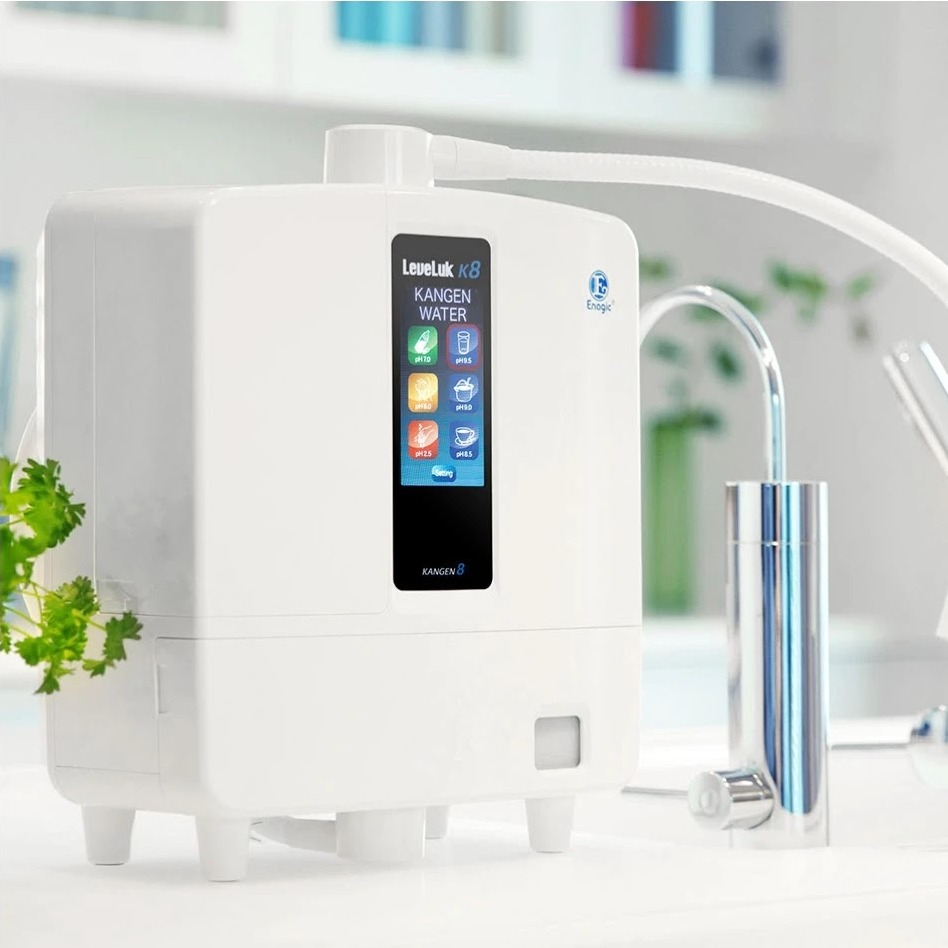

INFO
Change Your Water, Change Your Life!
Using advanced technology from Japan, our Kangen Water machine is able to convert your ordinary drinking water into delicious alkaline drinking water.

KEYS
j - Cycle theme left
k - Cycle theme right
r - Choose random theme
h - Show the website help